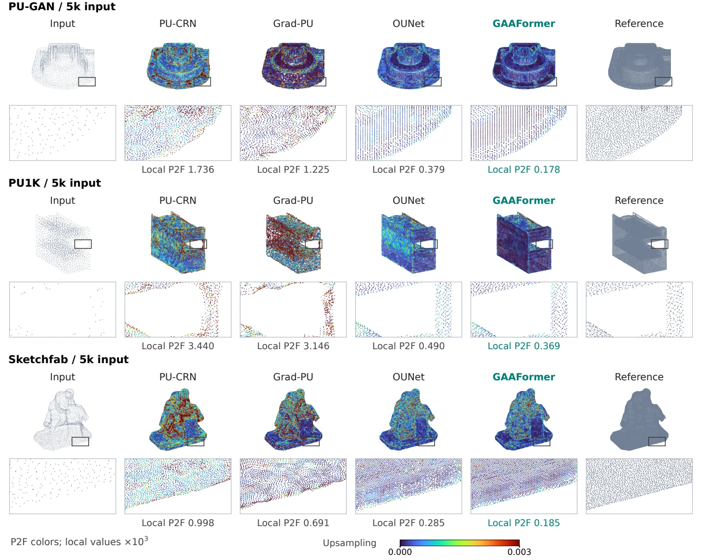

GAAFormer
Geometry-Anchored Attention Transformer for Joint Point Cloud Denoising and Upsampling
Manuscript submitted to arXiv.
Can one geometry model remove noise and fill in detail?
Denoising and upsampling both require points to follow the underlying surface. GAAFormer uses a shared octree transformer to address both tasks.
Its decoder defines attention neighborhoods with fixed voxel windows and alternating shifts. This anchors surviving-node neighborhoods to spatial coordinates as the generated output tree changes.

My contribution
I developed and evaluated geometry-anchored attention for the decoder of an output-guided octree transformer. The work combines the attention implementation, a deletion-consistency analysis, matched-backbone comparisons, architecture and objective ablations, and inference-cost measurements.
The encoder, positional encodings, prediction heads, and learned parameter count are inherited from the backbone. The change is in how decoder cells are grouped for attention: 4 × 4 × 4 voxel windows alternate between zero shift and a two-voxel shift.
Attention anchored to geometry
Stable neighborhoods
Fixed spatial windows preserve neighborhood membership among surviving cells when other branches are removed.
Shared architecture
The model retains the encoder, positional encodings, prediction heads, and parameter count of the serialized-attention backbone.

Experimental results
PUNet evaluation uses 20 test geometries at 10k and 50k input points, each with 1%, 2%, and 2.5% noise: 120 denoising inputs. Upsampling uses 27 PU-GAN, 100 PU1K, and 14 Sketchfab inputs. The same checkpoint handles all 261 inputs. The table below reports aggregate PUNet denoising results.
| Model | CD × 10⁵ | HD × 10³ | P2F × 10³ |
|---|---|---|---|
| Serialized-attention backbone | 6.2743 | 0.8251 | 1.9102 |
| GAAFormer | 6.0643 | 0.6655 | 1.9078 |
Lower is better. Mean denoising CD and HD decrease by 3.35% and 19.34%, respectively, relative to this backbone. Values are reported in the submitted manuscript.
Denoising visual comparison

Upsampling visual comparison

Testing the mechanism
Neighborhood stability
In a perturbation study on six geometries, removing 1% of depth-five branches left surviving-node neighborhood Jaccard at 1.000 for coordinate windows, versus 0.608 for regular Morton groups and 0.546 for dilated groups.
The comparison removes deleted keys from the reference neighborhood. It tests membership stability; attention weights and network outputs can still change.
Attention capacity control
Increasing serialized groups from 32 to 64 tokens produced mean denoising CD of 6.3589, versus 6.2743 for the serialized baseline and 6.0643 for GAAFormer (CD × 10⁵).
This control separates the benefit of spatial grouping from the effect of a larger attention buffer.
All values are reported in the submitted manuscript. The deletion-consistency property applies at a fixed depth and shift with fixed node coordinates.
Memory and latency tradeoffs
| Input case | Latency, serial / GAA (ms) | Peak memory, serial / GAA (MiB) |
|---|---|---|
| 10k-point denoising | 131.02 / 135.79 | 1,273.7 / 1,043.3 |
| 50k-point denoising | 251.40 / 259.94 | 2,341.8 / 2,057.8 |
| PU-GAN upsampling | 113.68 / 124.82 | 1,342.9 / 1,091.9 |
On the measured 10k-point denoising input, peak allocated memory fell by 18.1%, while latency increased by 3.6%. Spatial grouping changes memory access and computation even though the learned parameter count remains unchanged.
Each row is one measured input. Latency is the median of three synchronized repeats after two warm-ups; these measurements are not dataset-wide throughput estimates.
What the results establish
The work tests whether a more stable attention neighborhood can improve surface recovery in a shared restoration model. The measured denoising gains provide evidence for that design choice; the cost measurements expose its memory and latency tradeoffs. Cleaner and more complete geometry is relevant to downstream 3D perception, while downstream robot performance remains outside these experiments.
The gains are not uniform. Upsampling improves all three reported metrics on PU-GAN and Sketchfab, while PU1K slightly favors the serialized backbone. These comparisons do not imply that GAAFormer outperforms every task-specific method in every setting.